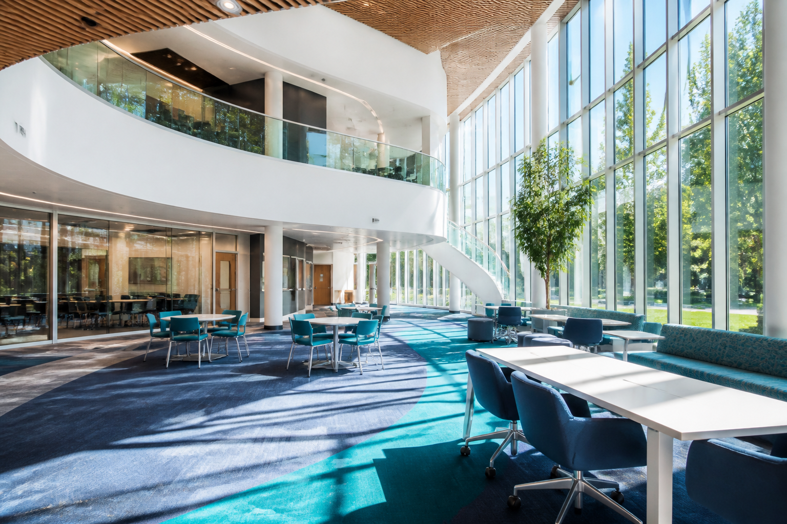

Education and skills
Online education, academic growth, digital literacy, and scholarship awareness.
Sepidan Organization is a youth-centered nonprofit supporting young people through education, culture, technology, and leadership development.

Who we are
Founded in 2024 and headquartered in Kabul, Sepidan designs inclusive programs that support academic growth, creative expression, digital skills, and professional readiness.
Its work is supported by educators, technical teams, cultural facilitators, volunteers, and partnerships aligned with the Sustainable Development Goals.
Read about SepidanWhat we do
Online education, academic growth, digital literacy, and scholarship awareness.
Technology-focused initiatives that encourage practical learning and innovation.
Cultural activities and creative expression, including writing and literary programs.
Leadership development and professional readiness for stronger futures.
Community-based learning supported by a strong volunteer network.
Collaboration with local and international partners around education, innovation, inclusion, and partnership.
The interface is ready for a secure Sepidan certificate database. The current public prototype clearly labels demo results.